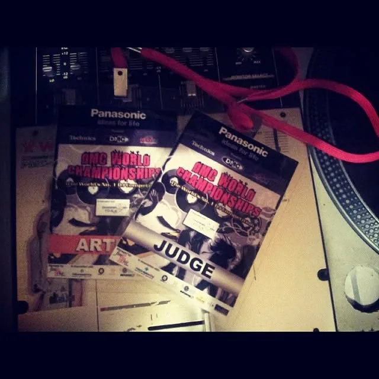
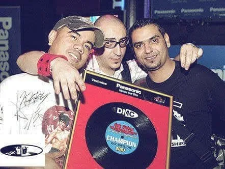
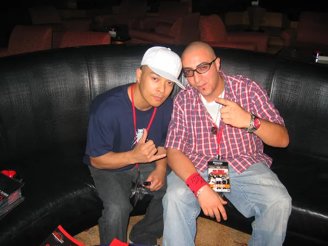

TECHNICAL AUTHORITY
2007 · Dubai
DMC World DJ Championship, GCC
Judge, the culture's own world championship
Called to adjudicate the region's best DJs at DMC's GCC battles. Technical authority recognised by the culture itself.